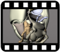

Tema 7. Órganos de ingestión

• Cavidad preoral, estomodeo y lóbulos cefálicos
• Aparato de ingestión ortopteroide
• Órganos de ingestión de neurópteros
• Órganos de ingestión de coleópteros
• Órganos de ingestión de himenópteros
• Órganos de ingestión de lepidópteros
• Órganos de ingestión de dípteros
• Órganos de ingestión de hemípteros y homópteros
• Órganos de ingestión de tisanópteros
Capítulo 12. Los órganos de ingestión (texto)
Presentación. Órganos de ingestión

Clase "Órganos de ingestión parte 1"
16 de febrero 2022

Clase "Órganos de ingestión parte 2"
16 de febrero 2022